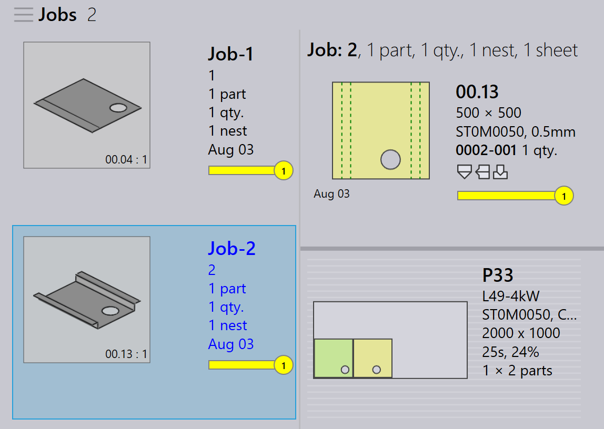

重新排料
TruSmartCAM 没有单独的重新排料模块。相反，重新排料是通过 job 级别的选项来处理的，这些选项为零件的组合方式提供了灵活性。
重新排料可以通过三种方式完成。
-
使用 Mix parts from multiple Jobs 进行重新排料。
-
使用 Add Parts 交互式向导进行手动重新排料。
-
使用 TecZone 进行手动重新排料。
使用 mix parts from multiple Jobs 进行重新排料
-
要启用此选项，请转到 factory → settings → Job → Nest settings → Mix parts from multiple Jobs。

-
启用后，此选项允许在自动 nesting 或交互式 nesting 期间将来自不同 job 的零件组合在一起，从而实现组合排料或 nesting。
-
例如：
-
Job-1 有 1 个零件，Job-2 有 1 个零件。
-
启用 Mix parts from multiple Jobs 后，TruSmartCAM 可以将这 2 个零件重新排料为单个优化的 nest。
-

-
如果不使用此选项，来自每个 job 的零件在 nesting/排料期间会保持分离，并使用不同的 layout 名称。
-
也可以在不启用此选项的情况下手动执行重新排料。
使用添加零件交互式向导进行手动重新排料
-
在 layout 视图中，选择要重新排料的零件。
-
右键单击零件，然后从 layout 面板中选择 Add Parts…。

-
按照向导中的提示完成重新排料过程。
-
选择 Show other job parts 并将它们添加到当前 job。

-
检查更改并确认重新排料。

有关更多详细信息，请参阅 添加零件。
使用 TecZone 进行手动重新排料
-
通过单击
 打开 TecZone。
打开 TecZone。

-
在 TecZone 界面中，单击 Add。

-
出现一个新窗口，您可以在其中选择要重新排料的零件。单击 Show…，然后选择 Other job parts。做出选择后，单击 Pick。

-
出现一个新窗口，您可以在其中定义零件需要重新排料的位置。
-
单击 Save changes to TruSmartCAM，重新排料后的 layout 将在 TruSmartCAM 中可用。